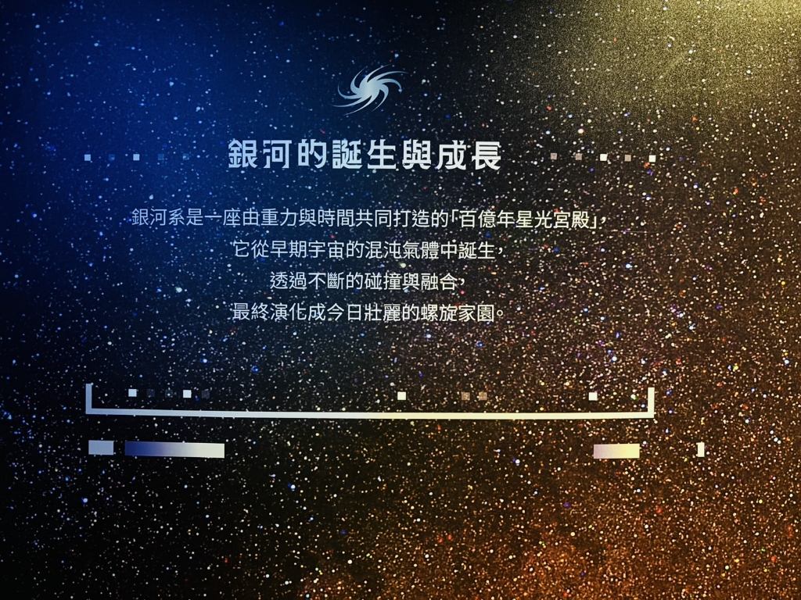
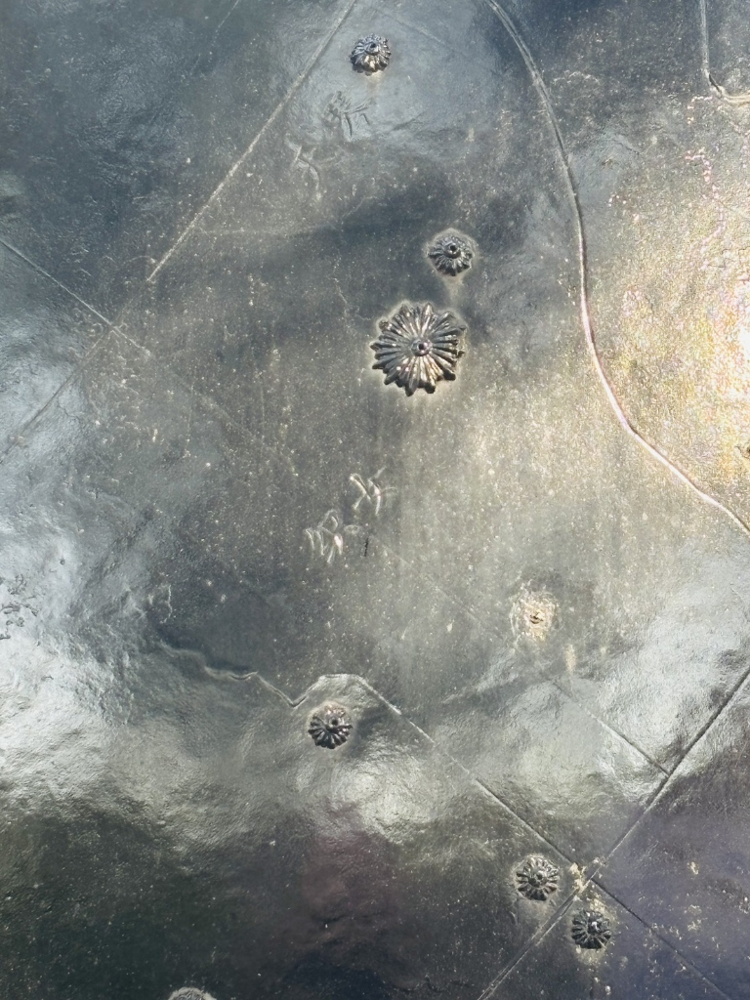
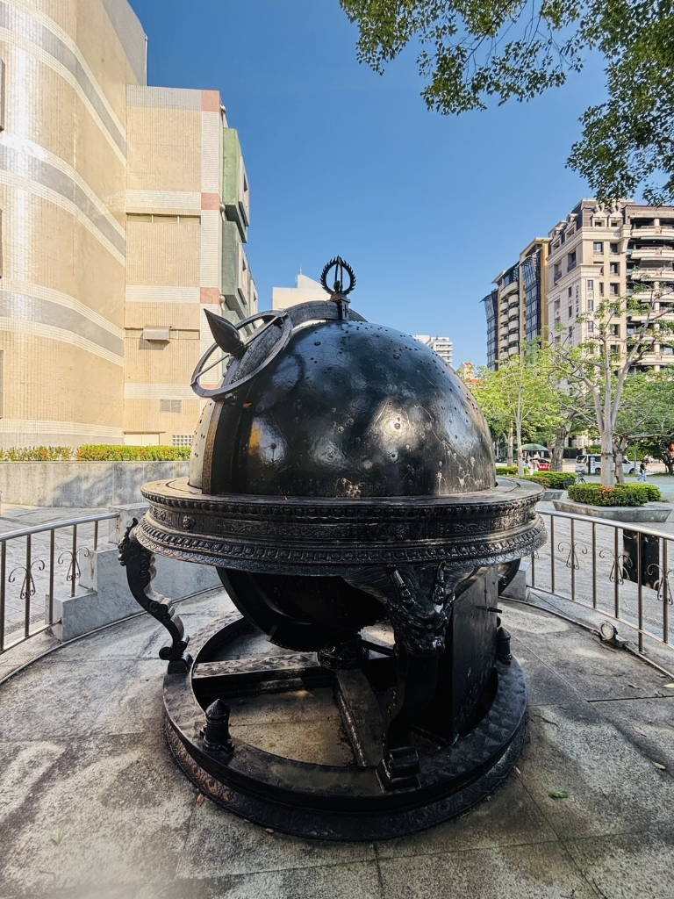
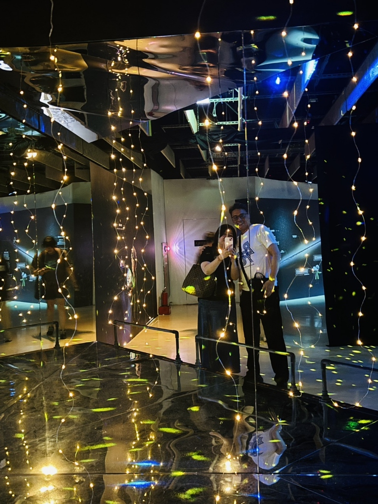
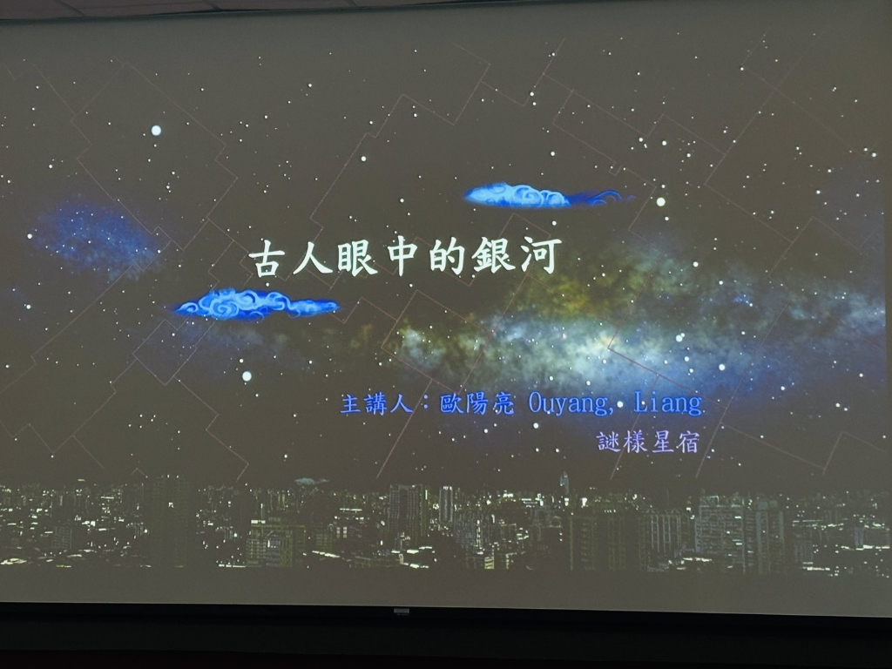

2026.05.30 ｜ 台北天文館參訪 & 謎樣星宿講座照片回顧





唐宋時期興起占卜個人命運的「三星術」，但各流派解讀流於主觀（自由心證），導致公信力下降。到了明清時期，星圖更遭到人為的「大幅竄改」；隨後為與西洋接軌，引進傳教士的西方觀測數據，導致許多傳統星官逐漸被遺忘。
此外，古人有將天上二十八星宿對應地面各省的「分野」制度。但這種設計充滿了「大中國主義」的侷限性，將如台灣等當時中國以外的地區，視為沒有星宿對應的「化外之地」。
大家熟知的「王母娘娘拆散牛郎織女」其實是跨越戰國與漢朝的神話大雜燴！戰國時期的竹簡就有牛郎織女，但王母娘娘卻是漢朝道教產物，兩者是被歷代文人逐漸融合的結果。
演講中也提到田野調查常遇見的「陷阱」：日本學者曾赴東北考察原住民獵熊部落的古老星空傳說，最後卻發現長老講的是「現代小學課本」裡的內容！這提醒了我們做文史考證時，必須隨時留意「現代資訊污染」。
為了客觀解開星官命名之謎，老師摒棄了被清代竄改的近代星圖，採用更接近上古原貌的「高句麗古星圖」來進行嚴謹的大數據比例統計。
結果有了驚人的實證：位於銀河範圍內的星官，有高達 30% ~ 38% 的名字（例如：船、魚、鱉、天津等）與「水」有關；相比之下，銀河外的星官卻只有 3% 與水相關！這個懸殊的數據差異，充分實證了古人將銀河視為一條真實河流的浪漫宇宙觀。
古代占星術與災禍預言看似神準，實則往往是「倖存者偏差」——史官只會記錄預言成功的巧合，而忽略無數次失準的紀錄。
從現代天文學來看，因地球自轉軸的「歲差」與恆星本身的「恆星自行」運動，兩千年前的星空和現在完全不同！例如當時的北極星是「帝星」，而現在則是「勾陳一」。因此，研究歷史必須回歸一手古籍史料，不應盲從占星迷信或過度依賴 AI 幻覺。
明末清初正值西方大航海時代，傳教士（如湯若望）越過赤道，看見了中國中原地區觀測不到的南極星空。
他們將這些南半球的星座帶入大清，補齊了古代星圖上的空白，因此清代星圖中突然多出了海山、海石、南船等帶有濃厚海洋色彩的星官，這也成為星圖大洗牌的開端。
除了東方的神話，演講也提到了古希臘對於銀河起源的有趣傳說。最著名的說法是，風流的宙斯偷偷把私生子（海格力斯）抱給熟睡的太太赫拉餵奶，赫拉驚醒後一把推開，噴灑出來的乳汁就成了滿天星辰，這也是銀河英文「Milky Way（乳之路）」的由來！
另一種說法則是一場「無照駕駛」的車禍：太陽神的兒子法厄同（Phaethon）偷開太陽馬車卻在天空中失控亂撞，導致天球被高溫燒焦，那道留在天上的焦痕，就成了我們今天看到的銀河。
日本著名曆學家涉川春海，利用中國星圖未標註的暗星，發明了日本特有的在地化星官。
他在排版星圖時充滿了趣味巧思，例如把代表保母的「天乳」故意放在織女星旁邊，或是把專門進貢給天皇的「鱒魚（腹刺）」放在天蠍座的肚子附近，展現了星文化傳遞時的有趣變化。
透過歐洲蓋亞（Gaia）衛星的觀測，我們得知天上的恆星其實都在緩慢移動（恆星自行）。
演講中打趣地提到：五萬年後的織女星會完全離開她的「梭子」星官，而牛郎星也會遠離他的兩個小孩。原本浪漫的七夕神話，在宇宙的尺度下，五萬年後將演變成「各奔東西」的家庭寫實劇！
古書中曾記載明朝發生過「流星雨打死幾萬人」的荒誕歷史紀錄。老師指出，這種需要幾千萬顆隕石同時砸下的奇觀在科學上極度不可信！
這生動地提醒了我們，研究文史必須進行多方「版本學」比對。因為古代多為人工手抄書，古人打瞌睡時常會抄錯漏字（例如把大蚯蚓「天蟁」不小心抄成「天啊」），盡信書不如無書。